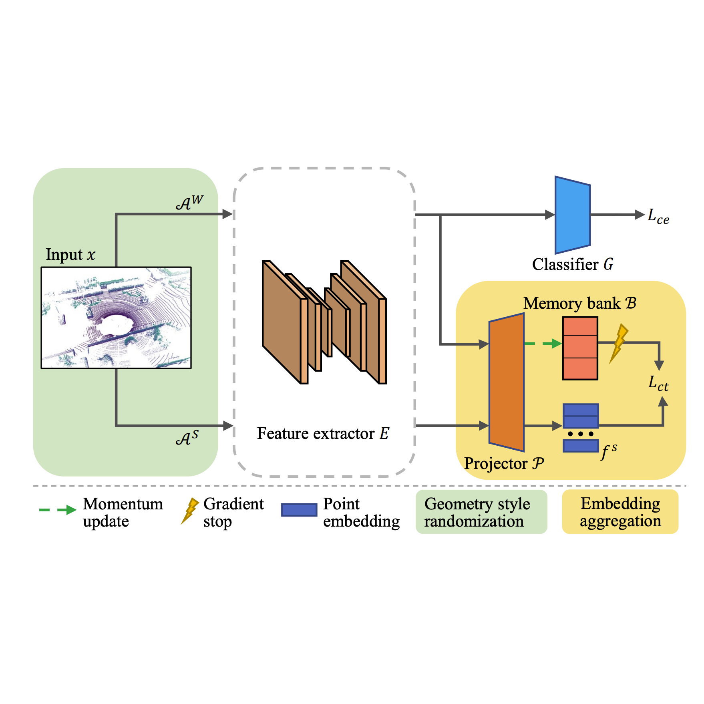
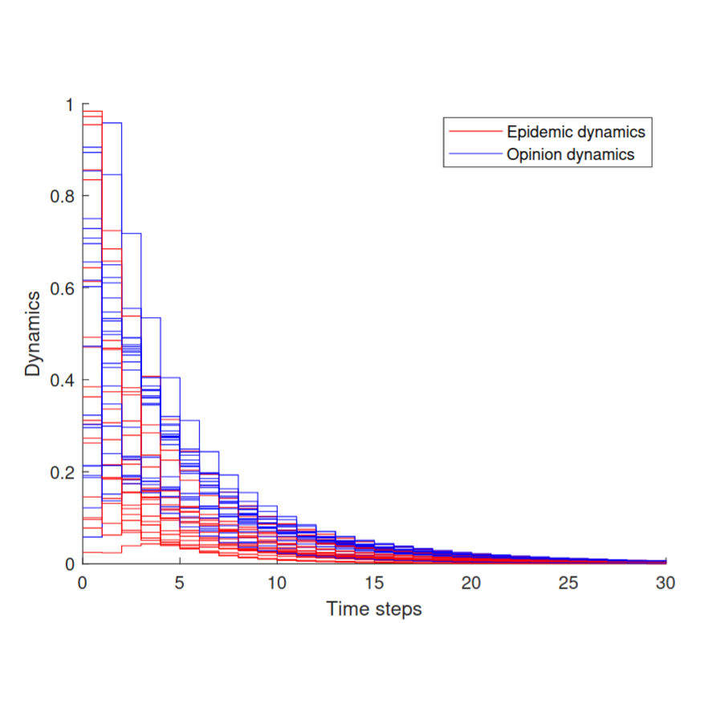

|
Ruijie Ren is a Ph.D. Student at Waseda University (早稲田大学) supervised by Prof. Edgar Simo-Serra. He obtained a Master's degree in Autonomous Systems at Technical University of Denmark (DTU) under the supervision of Prof. Jeppe Revall Frisvad. In 2020, he obtained a Bachelor's degree with first class honours in Mechanical Engineering from University of Leeds. He was very fortunate to have worked as a Research Assistant at Visual Intelligence Lab, Nanyang Technological University supervised by Prof. Shijian Lu in Computer Vision and Domain Adaptation. In 2021, he joined Perception and Manipulation Group in IRI (CSIC-UPC) and worked in Robotic Perception and 3D Reconstruction with Prof. Francesc Moreno-Noguer and Prof. Krystian Mikolajczyk. During his undergraduate study, he focused on Epidemic Dynamics and Multi-agent Systems under supervision of Prof. Ji Liu.
ruijieren98 [AT] gmail.com |
{kind=link}
|
Waseda University |
Nanyang Technological University |
Technical University of Denmark |
Institut de Robòtica i Informàtica Industrial |
University of Leeds |
|---|
|
|
My research interests span the fields of Robotics and Computer Vision, particularly visual odometry, object detection, 3d reconstruction, representation learning and domain adaptation. I am open to research discussion and collabration, please feel free to contact me by email :) |
|
|
|
Jianxiong Shen, Ruijie Ren, Adria Ruiz, Francesc Moreno-Noguer IEEE International Conference on Robotics and Automation (ICRA), 2024 [pdf] |
|
|  |
Aoran Xiao, Jiaxing Huang, Weihao Xuan, Ruijie Ren, Kangcheng Liu, Dayan Guan, Abdulmotaleb El Saddik, Shijian Lu, Eric Xing IEEE/CVF Computer Vision and Pattern Recognition Conference (CVPR), 2023 [pdf] [code] |
|
Ruijie Ren*, Mohit Gurnani Rajesh*, Jordi Sanchez-Riera, Adrian Lopez-Rodriguez, Fan Zhang, Yurun Tian, Guillem Alenya, Antonio Agudo, Yiannis Demiris, Krystian Mikolajczyk, Francesc Moreno-Noguer (* indicates equal contribution) International Conference on Machine Vision and Applications (ICMVA), 2023 [pdf] |
|
|
Weihao Xuan, Ruijie Ren, Siyuan Wu, Changhao Chen IEEE/SICE International Symposium on System Integration (SII), 2022 [pdf] |
|
|  |
Yixuan Lin, Weihao Xuan, Ruijie Ren, Ji Liu IEEE Conference on Decision and Control (CDC), 2021 [pdf] |

|
Weihao Xuan, Ruijie Ren, Philip E. Paré, Mengbin Ye, Sebastian Ruf, Ji Liu International Federation of Automatic Control World Congress (IFAC), 2020 [pdf] [presentation] |
|
|
|
IEEE RAS SLAM Winter School Project
University of Technology Sydney (Online) July, 2021 |
|||
 |
Robotic Vision Summer School Project
Australian Center for Robotic Vision, Canberra, Australia Feb, 2019 [code] [website] |
|
JST Funding: Support for Pioneering Research Initiated by the Next Generation (SPRING) 2023-2026 |
|
template adapted from this awesome website
|